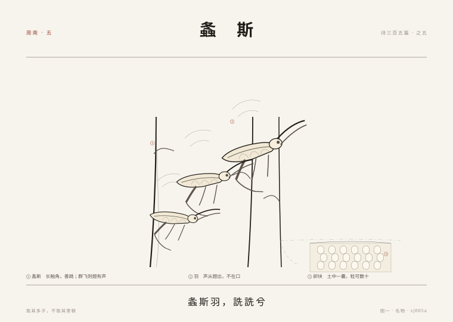
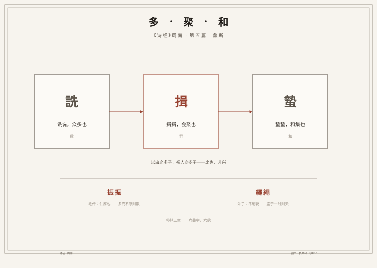

第五篇 螽斯
周南 · 之五 SJ005
吟唱 · 五声琴底
另备「吟诵」纯人声一版
古谱无存，今按五声音阶拟作吟诵调，非复原古曲；经文用字依《毛诗》正文。
一 解题
诗三判：
- 谁在说：一位祝人子孙众多的人。诗里没有「我」，只有「宜爾子孫」四字——这是致辞的口吻，不是自述的口吻。
- 说什么事：一只（或一群）螽斯振翅，声音薨薨；它一次产卵数十上百。诗人抓住「多子」这一端，转手就把这份「多」送到人身上：愿你的子孙，也这样多，这样和。
- 为何编在此：前四篇从夫妇之始说到上下相因。此篇再退一步，说「后嗣」——夫妇之所以为夫妇，最终落在这里。周南十一篇，格局是由「一人」渐次放大到「一家」再到「一族」。
《毛序》：「《螽斯》，后妃子孙众多也。言若螽斯不妒忌，则子孙众多也。」——把螽斯读成后妃之德，把「不妒忌」作为多子的因。
朱子《诗集传》：「比也。」——只此二字，最要紧。朱子明说此篇是「比」，不是「兴」。比者，以彼物比此物，全篇即一喻；兴者，先言他物以引起所咏，他物只是引子。此篇没有引子，螽斯就是所咏的那个喻本身。
本库的看法：这是一首祝辞，喻体是一只虫，喻旨是一家子孙。
汉代给它加了「不妒忌」的因，宋人给它定了「比」的体，两件事都各有价值：前者是
moral
的读法，后者是修辞的判断。而诗本身只说了一件事——多，且和。今天读它，不必先替它找道德，先看清它怎么把一个「多」字写得有声音、有动作、有秩序。
二 经文
第一章
螽斯羽，詵詵兮。宜爾子孫，振振兮。
第二章
螽斯羽，薨薨兮。宜爾子孫，繩繩兮。
第三章
螽斯羽，揖揖兮。宜爾子孫，蟄蟄兮。
分章：毛传、朱子皆三章，章四句。三章六换字，全在叠字上：诜诜／薨薨／揖揖，振振／绳绳／蛰蛰。这种「只换叠字」的写法，比《樛木》更极端——那一篇换的是实字，这一篇换的全是拟态词。
三 韵读
| 一 |
詵、振 |
真部 |
| 二 |
薨、繩 |
蒸部 |
| 三 |
揖、蟄 |
緝部 |
真、蒸皆鼻音收，緝则入声促收。三章一韵一换，收口越来越紧：一章宽，二章沉，三章一收就断。这不是偶然——第三章的「蛰蛰」，本就是「藏而聚」的意思，音也随义收住了。
叠字在此不是装饰。六组叠字，六种貌：诜诜是「多」，薨薨是「声」，揖揖是「聚」，振振是「厚」，绳绳是「续」，蛰蛰是「和」。若以为可互换，此诗便只剩六声「多啊多」。
四 字义名物
- 螽斯——蝗属。《毛传》「螽斯，蜙蝑也」；朱子「螽斯，蝗属」。今人或以为即螽斯科（蝈蝈一类），与蝗科有别。产卵成块，一产数十至百余，是本篇取象的实处。
- 羽——翅。不言「螽斯」而言「螽斯羽」，是把注意力聚到振翅这一动作上；声从翅出。
- 詵詵（shēn）——众多貌。《毛传》。
- 薨薨（hōng）——众多也，亦象振翅之声。《毛传》「薨薨，众多也」。
- 揖揖（jí）——会聚貌。《毛传》「揖揖，会聚也」。
- 振振——仁厚貌。《毛传》「振振，仁厚也」；一说盛貌。
- 繩繩——戒慎也。《毛传》；朱子「不绝貌」。一从德，一从续，两训并存。
- 蟄蟄——和集貌。《毛传》「蛰蛰，和集也」。
- 宜——安也，顺也。「宜尔子孙」，使之相安相顺。
五 今译
第一章
螽斯振着翅，一群群那么多。愿你的子孙，仁厚而振振。
第二章
螽斯振着翅，薨薨地响成一片。愿你的子孙，绵延不绝。
第三章
螽斯振着翅，聚在一处。愿你的子孙，安和而相集。
译注：「宜」不译作「应该」，译作「使之宜」——这是祝辞的语气，不是训诫的语气。
六 章旨
一章：多。诜诜是数目，振振是质地。多而不厚，是散；此章先说多，随即补一个「厚」字，把「多」立住。
二章：续。薨薨是声，绳绳是续。有声音，才知是活的一群；能相续，才不是一时之盛。
三章：和。揖揖是聚，蛰蛰是和。聚而不和，是挤；此章以「和集」收，把「多」与「续」都归到一个「和」字上。
三章之序：多 → 续 →
和。这是古人论「族」的三层：人要多，脉要续，众要和。少一层，福就成祸——多的而不续，是夭；续而不和，是争。
七 诗教
- 比：全篇一喻，无起兴之物。读此篇要先认这一点：螽斯不是引子，是喻体本身。所以它不能像《关雎》那样「先言雎鸠」，它一开口就是喻。
- 观：可观古人取象之法——同一种虫，取其「多子」则为祝，取其「害稼」则为灾。取象之择，即是诗心。
- 群：此篇是家族之祝。「宜尔子孙」四字，后世楹联、寿序、家训里到处都是它的回声。它把「福」从个人身上挪到了「后代」身上，这是中国式幸福观的一个原型。
- 怨：此篇无怨。三百篇中纯然祝颂而不含讥刺者极少，此其一。
八 分寸与边界
- 不可把螽斯读成蝗灾。诗只取「多子」一端，不取「害稼」一端。但这不等于诗中无张力：同一种虫，在《诗》里是祝辞，在《春秋》里是灾异——这个反差要看见，才知《诗》取象之严：它取的是「生」，不是「害」。
- 不可把六个叠字读成随意堆砌。诜诜（多）、薨薨（声）、揖揖（聚）、振振（厚）、绳绳（续）、蛰蛰（和），六字六貌，各有所指。可通，不可换。
- 不可把「振振」读作「振兴」。振振是仁厚之貌，与「振兴」无涉；此字在此是形容词，不是动词。
- 不可因「多子」而简单判此篇为「生育压力」的古代遗物。它是一首祝辞，祝的是「多而和」，不是「多而贵」。但它也确实把「多」当作福——这一点可以批评，不必回护，也不必因此不读。
- 不可把此篇当「兴」读。若当兴读，则螽斯只是引子，「宜尔子孙」凭空而来，全诗就空了。朱子定为「比」，是本篇读法的地基。
九 存疑
- 螽斯何物：毛传「蜙蝑」，即蝗；今人多以为螽斯科（蝈蝈、纺织娘一类），与蝗不同科。诗取其多子，形制不必指实，图从「长触角、短翅、善跳」的螽斯。
- 六叠字之训：振振，毛「仁厚」、一说「盛」；绳绳，毛「戒慎」、朱「不绝」。本库并存，译文取「厚」与「续」。
- 「宜」之训：一训「宜有」（使之有），一训「和顺」。本库取后者，因下三章所祝皆是「和」而非「有」。
- 是否后妃诗：《毛序》以为后妃子孙众多；今人多以为通用祝辞，不必指人。本库不指实。
- 三章是否递进：一说三章并列，只是换韵凑足；一说由「数」到「声」到「聚」，层层收束。本库从前说之后的后者——不是并列，是收束。
十 跨典
- 《周南·桃夭》：「之子于归，宜其室家。」——同一个「宜」字。彼祝新婚，此祝后嗣；一在始，一在续，周南的祝辞是一条线。
- 《唐风·椒聊》：「椒聊之实，蕃衍盈升。」——以植物多实喻人多子，与以虫多子喻人多子，同一手法，一木一虫，可见《诗》取象之宽。
- 《大雅·既醉》：「君子万年，永锡祚胤。」——「祚胤」即子孙之福。此篇说得具体（多、续、和），《既醉》说得抽象（锡祚胤），一近一远。
- 《豳风·七月》：「斯螽动股。」——同是螽类，彼处写物候（虫鸣则在野），此处写祝辞。同虫两用，一见农事，一见家族。
- 《春秋》蝗灾之记——（《春秋》屡书「螽」为灾，如隐公五年「螽」、桓公五年「螽」）——同一个字，一边是「宜尔子孙」，一边是「灾」。这不是矛盾，是取象的两端：诗取生，史取害。
十一 双卡与图
双卡五对：
| 螽斯（虫） |
子孙（人） |
| 詵詵（多） |
振振（厚） |
| 薨薨（声） |
繩繩（续） |
| 揖揖（聚） |
蟄蟄（和） |
| 多 |
和 |

图一 · 螽斯与卵 名物图

图二 · 多聚和 义理图
读图三处：
- 翅与声：螽斯之声出于翅，不在口。图中双翅微微张开，是「羽」字所本——诗不写虫，写虫的翅，声便有了来处。
- 卵块：土中一排卵粒，数是数十。这是「多」的实物根据，也是全篇唯一的「证据」：祝辞不是空口，它有物可依。
- 触角长于身：螽斯与蝗的分野，正在触角。图中触角过身，是刻意与「蝗」分开——诗取螽斯，不取蝗。